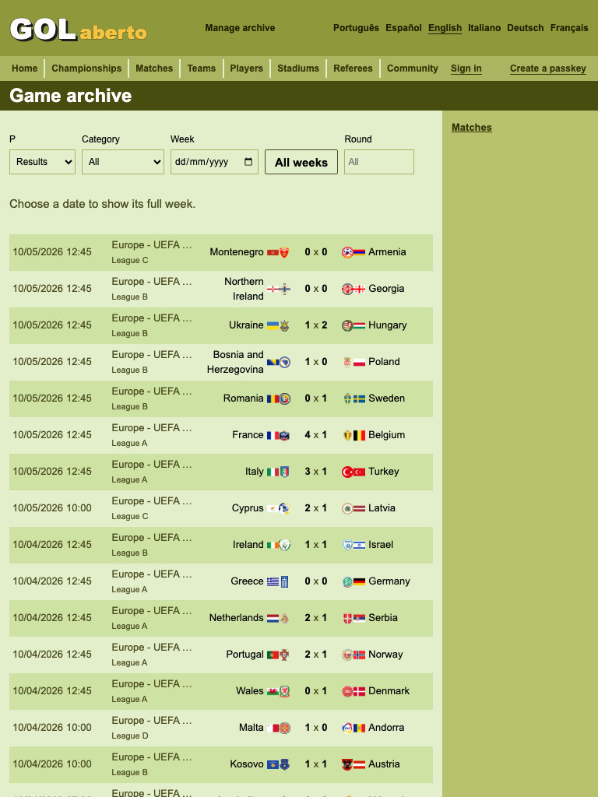
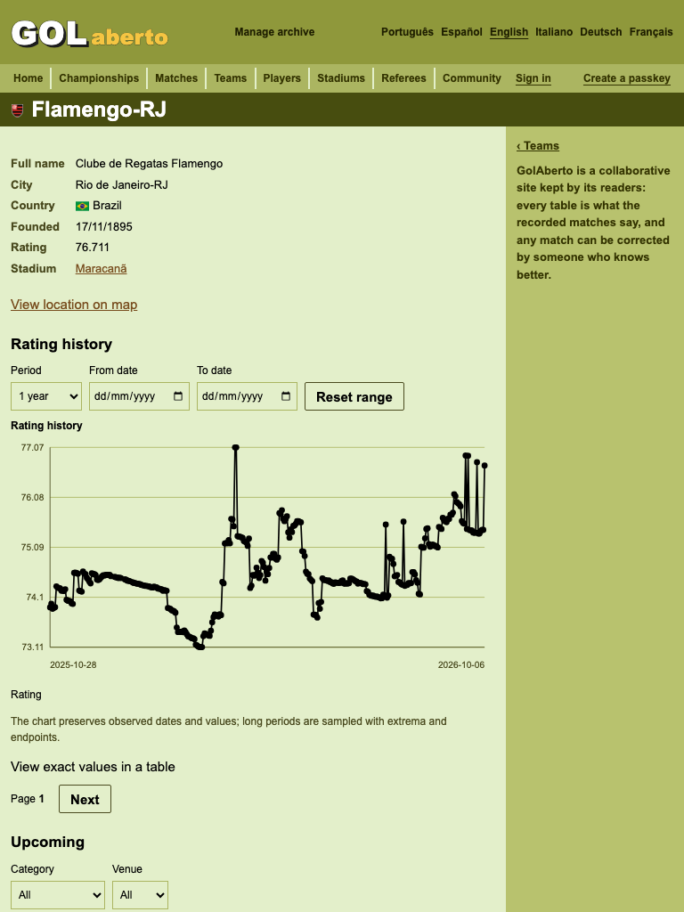
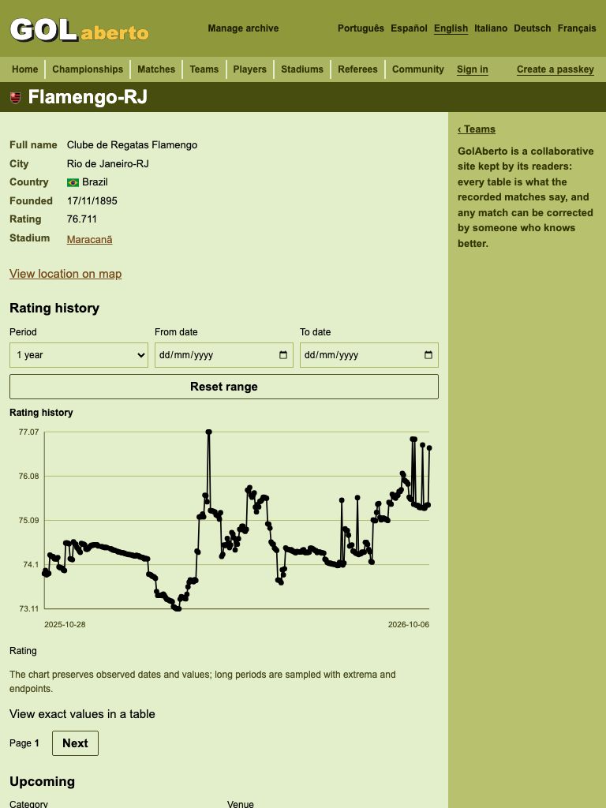
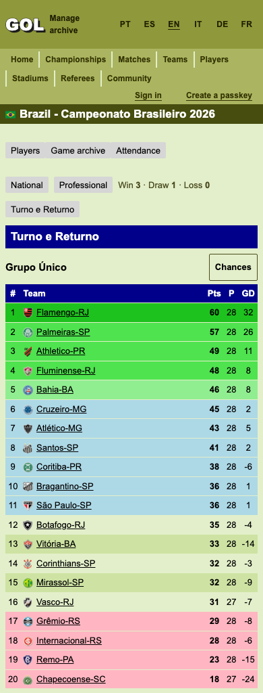
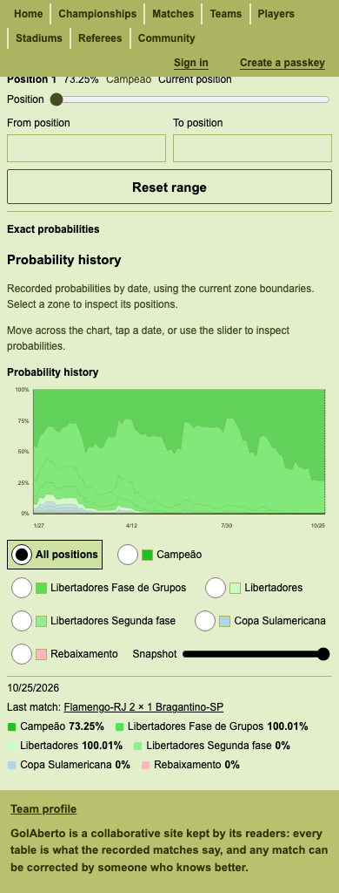

Archive filter geometry


2026-10-28 · Release visual regression
The visual gate found small phone targets and invisible keyboard-focusable odds controls. Authentication buttons, facts and community links, and fixture links now keep the existing 24px target floor. The championship page imports its shared standings styles. Odds selection uses visible native radio controls.
The archive’s filter controls previously changed row count as localized text and options arrived. Their width now comes from the layout. The rating chart keeps the existing plot, caption and legend space while hydration passes through an empty tab row.
| Tablet route | Before CLS | After CLS |
|---|---|---|
| Game archive | 0.23747 | 0.00055 |
| Team profile | 0.16101 | 0.00348 |
These screenshots and measurements use production data in a fresh Chromium context. “After” substitutes the local CSS responses, including immutable asset paths, before page load; it is a preview of this change, not a production deployment. The layout-shift observer starts before navigation and excludes recent user input.



Authentication buttons now measure 24px high instead of 18px; team links measure 24px instead of 15px.


The radios change from transparent 1×1px inputs to visible 24×24px native controls. This production participation page has a separate initial layout shift of approximately 0.14 in both versions; these screenshots establish control visibility, not that route’s CLS.

